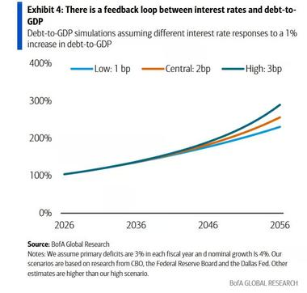
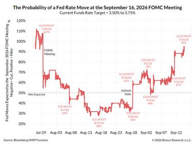
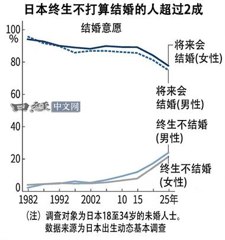

今日 Jason 不跪可见发帖数：3 条（均显示"2 小时前"，即今天）
⚠️ 重要：本次抓取处于"预览受限"状态，见下方说明，今天可能还有更多帖子未能看到。
⚠️ 访问状态说明（先读这一段）
今天打开星球页面（wx.zsxq.com/group/28518511148841）后，页面顶部仍显示 "￥404 加入星球" 按钮，帖子列表底部写着 "加入星球后可查看全部 2w+ 主题"。这说明当前浏览器里的知识星球账号 对本星球只有"游客预览"权限，不是已加入的会员状态。
后果有两点，请留意：
- 只能看到最新 3 条帖子 + 3 条"精选"老帖（精选是 3 月、2 月、1 月的旧内容，不是今天的）。今天 Jason 若发了超过 3 条，第 4 条起我看不到。
- 可见的这 3 条，正文被服务器截断（结尾是"…"），我只能读到开头一段，配图倒是完整拿到了。
可能原因：星球会员是"有效期一年"的付费制，这个任务上一次跑通是 2026-06-04，到今天已 3 个多月——很可能是会员到期了，也可能是浏览器里登录的知识星球账号不是当初买会员的那个。建议你在浏览器里手动打开这个星球确认一下会员/登录状态；恢复会员后，明天的解读就能恢复到完整正文 + 全部当日帖子。
下面基于"能看到的部分"尽量做深入解读——配图是完整的，信息量其实不小。
今日要点速览
今天可见的 3 条都是 Jason 一贯的风格：转发一条关键财经信源（配一张核心图表），点到为止。三条串起来是一条清晰的宏观主线——
- 两条讲美国：一条讲美国财政越来越"借短还短"（短期国库券占比创 2010 年以来新高，利息负担已达 1.4 万亿美元/年），另一条讲市场几乎笃定本周三美联储要"加息"（概率 95%）。财政在扩张、利率还要往上抬，两件事叠在一起，指向的是"美国政府的利息账单会越滚越大"这个长期隐忧。
- 一条讲日本：18–34 岁未婚年轻人里，"这辈子不打算结婚"的比例男女双双首次突破 20%。这是人口/长期需求的故事，和"日本为什么长期通缩、长期低增长"是同一条根。
一句话：今天的关键词是"债务的利息成本"和"人口的长期萎缩"——都是慢变量，但都是决定未来 10–30 年资产定价的底层变量。
帖 1 · 美国财政越来越依赖"短债"，利率一升利息就飙
发布时间：2026-09-14（约 2 小时前） ｜ 信源：zerohedge
帖子原文（预览可见部分）
zerohedge： 美国财政部在 Yellen、Bessent 延续的发债策略下，越来越依赖 Treasury Bills，也就是短期国库券。目前 T-Bills 占美国总债务的比例已经达到 23%，这是 2010 年以来最高水平。短债占比越来越高，最大的问题是：利率一升，利息成本很快就会上升。因为长期国债的利率在发行时已经锁死，但 T-Bills 几个月就要重新融资一次。所以美国财政的利率敏感度在上升。按过去 12 个月计算，美国联邦政府的总利息支出已经达到 1.4 万亿美元，BofA…（预览截断）

一句话核心
美国政府为了省当下的利息，越来越多地借"几个月就要还/续借一次"的短钱，结果是——一旦利率上行，整个国债利息账单会很快跟着往上跳。
背景与关键数据（用大白话讲清楚）
- T-Bills（短期国库券）：美国政府借钱的一种，期限 ≤1 年（常见 1/3/6 个月）。相对地，**长期国债（Notes/Bonds）**期限 2–30 年。
- "利率锁死" vs "几个月重定价"：你 2020 年发的一张 30 年期国债，票面利率当年就定死了，哪怕现在市场利率涨到 5%，你还是只付当年那个低利率。但短债不一样——3 个月就到期，到期就得按"今天的市场利率"重新借一遍。所以短债占比越高，政府的债务成本就越像"浮动利率房贷"，市场利率一动，利息立刻跟着动。这就是帖子说的"利率敏感度上升"。
- 23% 是 2010 年以来最高：意味着现在美国债务结构里"浮动"的部分特别大。
- 1.4 万亿美元/年利息：这是个惊人的数字——已经接近甚至超过美国国防开支的量级。利息本身不产生任何生产力，纯粹是"借钱的成本"。
图片解读
配图是 美银全球研究（BofA Global Research）的 Exhibit 4：《利率与债务/GDP 之间存在一个反馈循环》。
- 横轴：2026 → 2056（未来 30 年模拟）。纵轴：债务/GDP 比率，0%–400%。
- 三条线：分别假设"债务/GDP 每上升 1%，利率会相应上升多少"——浅蓝 = 低敏感（1 个基点）、橙 = 中性（2 个基点）、深蓝 = 高敏感（3 个基点）。
- 图讲的信号：三条线都从今天的约 100% 一路爬升，到 2056 年分别到 约 230%、260%、300%。而且利率越敏感（深蓝线），债务越往上翘——这就是标题说的"反馈循环"：**利率高 → 利息贵 → 债务涨得更快 → 市场要求更高利率 → 利息更贵……**恶性循环。
- 图下小字标注前提：假设每年基础赤字为 GDP 的 3%、名义增速 4%。
为什么重要 / 对市场和经济的含义
- 这不是"美国明天要违约"的意思，而是长期方向：财政对利率越来越脆弱。这解释了为什么"美联储想加息压通胀"和"财政受不了高利率"会长期打架。
- 对资产价格："财政赤字货币化"的长期压力 → 利多黄金、利多实物资产、对长久期资产（长债、部分高估值成长股）是隐性风险。 Jason 转这条，多半是在提醒"美国财政的可持续性"这个慢性病还在恶化。
延伸知识
- "债务螺旋（debt spiral）"：当 利率 r > 经济增速 g 时，即使政府不新增赤字，光利息就能让债务/GDP 自动往上滚。这是宏观里判断债务可不可持续的黄金公式（r vs g）。本图的"反馈循环"就是 r 会随债务上升而上升的加强版。
- 历史类比：二战后美国也曾债务/GDP 超 100%，但当时靠"高增长 + 金融抑制（人为压低利率）"慢慢化解。今天增长没那么高、利率还被通胀顶着，所以更难。这也是为什么很多宏观投资者（包括 Jason 常引用的 Dalio）反复强调"金融抑制/货币贬值"是最可能的出路——即让通胀和名义增长慢慢"稀释"掉债务。
帖 2 · 市场几乎笃定：本周三美联储要"加息"，概率 95%
发布时间：2026-09-14（约 2 小时前） ｜ 信源：biancoresearch
帖子原文（预览可见部分）
biancoresearch： 周三美联储加息的概率为 95%，问题不再是他们是否应该加息，而是投票结果如何。#金融

一句话核心
利率市场已经把"本周三（9/16）美联储会加息"当成板上钉钉（95%），现在大家关心的只是"投票几比几、有没有人反对"。
背景与关键数据
- 这里注意方向：说的是 加息（Hike），不是降息。图上当前利率区间是 3.50%–3.75%。也就是说，在这个时点的宏观情景里，美联储还在收紧（大概率是通胀又抬头，需要继续压）。
- "问题不再是是否加息，而是投票结果"：美联储的利率决议由 FOMC（联邦公开市场委员会）投票决定。当"加不加"已无悬念时，市场会转而盯投票分歧——如果出现罕见的"反对票（dissent）"，往往说明委员会内部对前景看法开始分裂，这本身是重要信号。
图片解读
配图是 Bianco Research 用 Bloomberg WIRP 工具做的《9 月 16 日 FOMC 会议美联储行动概率》。
- 横轴：从 7/29 到 9/12 的时间轴。纵轴：市场预期的加息幅度概率，正值 = 加息、负值 = 降息。
- 红线：市场对"这次会议会不会动、动多少"的实时定价。图中可见几次跳动（如 8/27 Jackson Hole 前后、以及 9 月初就业/CPI 数据公布点位），最新一点标注 "9/14/26，95%"——正好对应帖子说的 95%。
- 信号：一路走高并稳定在 95% 附近，说明近期数据（通胀/就业）把加息预期彻底钉死了。
为什么重要 / 对市场和经济的含义
- 当一个结果被市场定价到 95%，"加息"本身几乎不会再引起大波动（已经 price in）。真正能引发波动的是两件事：①点阵图/声明措辞（未来还加不加、加到哪）；②投票分歧。这就是 biancoresearch 强调"看投票结果"的原因。
- 结合帖 1 一起看：财政越来越怕高利率，美联储却还在加息——这正是当前宏观最拧巴的张力。加息利空长久期资产、阶段性利多美元；但"高利率 × 高债务"又强化了帖 1 的长期财政风险。
延伸知识
- WIRP（World Interest Rate Probability）：彭博的一个工具，用**利率期货/隔夜指数掉期（OIS）**反推市场对每次央行会议的加/降息概率。它是"市场怎么想"的温度计，不是美联储的官方预告。
- "price in（已计入价格）"：金融市场是"预期机器"。一件事只要被广泛预期，价格就提前反映了；真正推动价格的往往是**"预期与现实之间的差（surprise）"**。所以老手常说"buy the rumor, sell the news"（传闻时买，兑现时卖）——理解 95% 这个数字的意义，关键正在于此。
帖 3 · 日本年轻人"终生不婚"男女双双首破 2 成
发布时间：2026-09-14（约 2 小时前） ｜ 信源：日经中文网
帖子原文（预览可见部分）
日经： 日本国立社会保障与人口问题研究所 9 月 11 日公布了 2025 年出生动向基本调查。从 18 至 34 岁的未婚人群中表示"终生不打算结婚"的受访者比例来看，男女均自调查开始以来首次超过 2 成。与此同时，人们希望生育或理想中的子女数量也持续下降。据称，一些原本打算结婚却因各种原因而未能如愿…（预览截断）

一句话核心
日本官方最新调查：想结婚的年轻人越来越少、"这辈子就不结了"的比例创历史新高，理想子女数也在降——少子化的"源头"（结婚意愿）在继续塌。
背景与关键数据
- 数据来源权威：日本"国立社会保障与人口问题研究所（IPSS）"的**"出生动向基本调查"**，是日本人口领域最核心的官方长期追踪之一，每几年一次。
- "终生不打算结婚"男女均首超 20%：在日本，结婚和生育高度绑定（婚外生育极少），所以"结婚意愿"几乎是"未来出生人口"的先行指标。结婚意愿塌 → 几年后出生数塌。
- 理想子女数也在降：连"打算结婚的人"想要的孩子数量都在减少——这是双重下行。
图片解读
配图是日经中文网的折线图《日本终生不打算结婚的人超过 2 成》（主题：结婚意愿）。
- 横轴：1982 → 2025（图上标"25 年"）。纵轴：比例 0%–100%。
- 上面两条线（虚线/实线，约 75%–95%）："将来会结婚"的男性/女性比例——一路缓慢下滑，从早年约 90%+ 降到约 75–80%。
- 下面两条线（约 5% → 20%+）："终生不结婚"的男性/女性比例——明显上翘，尤其近十年加速，到 2025 年双双越过 20%。
- 注脚：调查对象为 18–34 岁未婚者，数据源为日本出生动态基本调查。
- 信号：两组线呈"剪刀差"——愿意结婚的在降、明确不婚的在升，趋势清晰且在加速。
为什么重要 / 对市场和经济的含义
- 人口是最慢但最确定的宏观变量。结婚/生育意愿下降 → 未来劳动力和内需长期萎缩 → 潜在增长率下移、长期通缩压力、社保/养老金体系承压。
- 这正是"为什么日本利率长期趴在地板上、日本股市长期靠外需和企业改革而非内需驱动"的底层原因之一。Jason 把它和美国财政/加息放在一起，隐含的对照是：发达国家各有各的慢性病——美国是"债务+利息"，日本是"人口+需求"。
延伸知识
- "人口红利"与"人口负债"：一个国家年轻劳动力多、抚养负担轻时，增长容易（红利）；一旦老龄化、劳动力萎缩，增长就逆风（负债）。日本是全球最早进入"人口负债"的大型经济体，常被当作"未来其他老龄化国家的预演"。
- 少子化的"链条"：晚婚/不婚 → 少子 → 老龄化加速 → 劳动力↓、消费↓、财政社保负担↑ → 增长与利率长期承压。理解这条链，就能理解为什么各国政府对"结婚率/生育率"这种看似社会议题的数据如此紧张——它最终会传导到 GDP 和资产价格。
今日全图索引
| 帖号 | 时间 | 主题 | 标签/信源 | 图片文件名 |
|---|---|---|---|---|
| 帖 1 | 2026-09-14（2 小时前） | 美国财政依赖短债、利率敏感度上升、利息 1.4 万亿 | zerohedge / BofA | post1_img1.jpg |
| 帖 2 | 2026-09-14（2 小时前） | 本周三美联储加息概率 95%，关注投票分歧 | biancoresearch / #金融 | post2_img1.jpg |
| 帖 3 | 2026-09-14（2 小时前） | 日本 18–34 岁"终生不婚"男女双双破 2 成 | 日经中文网 | post3_img1.jpg |
注：本报告在"星球预览受限"状态下生成——仅能看到最新 3 帖且正文被截断，配图为完整拿取。若今日 Jason 发帖多于 3 条，本报告未覆盖后续帖子。建议核对星球会员/登录状态后重跑，以恢复完整正文与全部当日帖子。